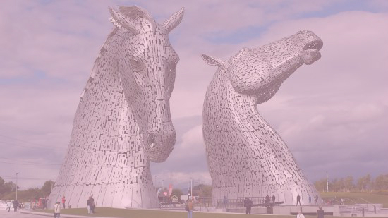

Built of structural steel with a stainless steel cladding,
The Kelpies are 30 metres high and weigh 300 tonnes each
The sculptures were designed by sculptor Andy Scott
and were completed in October 2013.
During the first year following the opening,
nearly 1 million people visited the sculptures.